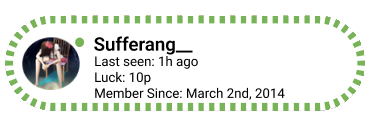
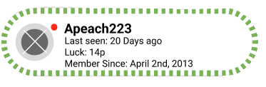

A free forum dedicated to non-members and official members surrounding around 5chan, internet culture, ranting, venting, new discovery’s, self improvement, advice and questions.
“You can take the advice but need to do the work”

PLEASE dont buy a mentorship program if you’re like me.
were like me..
I started out as a official member almost 2 years ago. I would attend my mentorships and read other forums and what not but I couldnt bring myself to fully submerge in the tasks and the advice being given to me for about 2/3rd’s of that time. It was until I had a family death happen a few months ago where I finally snapped into reality. I was tired of all the lackluster work and excuses i gave myself, i unintentionally was hurting my own success and was brainwashing myself that I was doing all of this ‘self improvement’. The truth is, you will never change no matter how many times you hear advice, it doesnt mean it doesnt work but it certainly will show results once YOU are ready. The advice will no magically be applied once you listen but once you do. I cant say..
“hate on the internet will forever live”

Listen.. im not advocating that you should hate on the internet or that it should even be a thing but LISTEN, It will never not exist, I did buy a member-shiip to browse and access the great information and advice 5chan gives but I feel as if our community tries to condemn people for having opinions sometimes. I believe hate can be a bad or a good thing. Ive lost weight and practiced and progressed on my ‘lack attributes’ by listening to discouraging (RUDE) feedback.
The internet wont ever be a civil place nor can you change some intrusive thoughts you think but you can change how you react and intake information.. Research by Fredrickson (2001) on positive emotions and resilience suggests that individuals who experience adversity, such as internet hate, can grow stronger if they reframe the experience and focus on personal growth.
You will never escape rude people and their opinions.
I respect this websites attributes that include healthy internet and lifestyle habits but I fear some people in this community take it to the extreme and go into lengths of isolation to avoid certain types of people or the internet altogether to either run from themselves and what this site tries to reveal about certain subgroups on the internet (haters). You’re human as well, its alright to have your own judgements, just matters on how you display it, or if you dont. Your thoughts dont make you, its what you do and your character. .